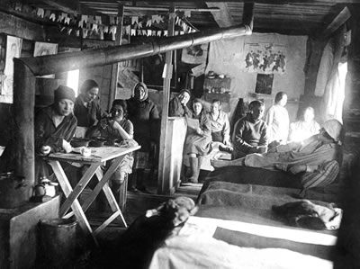
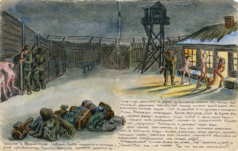
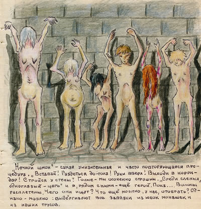

Online Exhibit → Stalin’s Gulag
Women in the Gulag
Women suffered greatly in the Gulag. Male camp employees, guards, and even other male prisoners sometimes raped and abused women. Some female prisoners took on “camp husbands” for protection and companionship. Some were pregnant on arrival or became pregnant while in the Gulag. Occasionally, Gulag authorities released pregnant women and women with young children in special amnesties.


Gulag women living in overcrowded, poorly heated barracks.
Courtesy of the International Memorial Society.More frequently, mothers had little respite from forced labor to give birth, and Gulag officials took babies from their mothers and placed them in special orphanages. Often these mothers were never able to find their children after leaving the camps.


A drawing by Evfrosiniia Kersnovskaia, a former Gulag prisoner.
Courtesy of Evfrosiniia Kersnovskaia Foundation, Moscow.“The arrival at the corrective labor camp turned out to be the culmination of the humiliation. First we were made to strip naked and were shoved into some roofless enclosures made out of planks. Above our heads the stars twinkled; below our bare feet lay frozen excrement. An enclosure measured 3 square feet. Each held three to four naked, shivering, and frightened men and women. Then these ’kennel cages’ were opened one after the other and the naked people were led across a courtyard‘the camp version of a foyer‘into a special building where our documents were ’formulated’ and our things were ’searched.’
The goal of the search was to leave us with rags, and to take the good things ’sweaters, mittens, socks, scarves, vests, and good shoes’for themselves. Ten thieves shamelessly fleeced these destitute and barely alive people.
‘Corrective‘ is something that should make you better, and ‘labor‘ ennobles you. But ‘camp‘? A camp wasn‘t a jail. So then what on earth was going on? ”


A drawing by Evfrosiniia Kersnovskaia, a former Gulag prisoner.
Courtesy of Evfrosiniia Kersnovskaia Foundation, Moscow. Translation by Deborah Hoffman.“The night search, the most degrading procedure, was frequently repeated. “Get up! Get undressed! Hands up! Out into the hall! Line up against the wall.” Naked we were especially frightened. “Among the blind, the one-eyed is king,” and next to them I was still a hero—for the time being. Our hair was undone. What were they looking for? What more could they take away from us? There was something, however: they pulled out all the ties that had been holding up the nuns' skirts and our underwear.”
Online Exhibit | Reflections | Traveling Exhibit | Teacher Resources | About
© 2006–2021, Center for History and New Media, George Mason University.